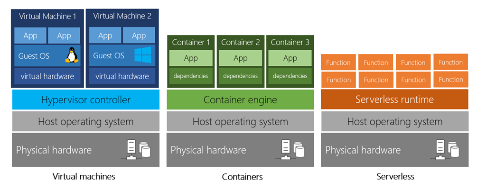
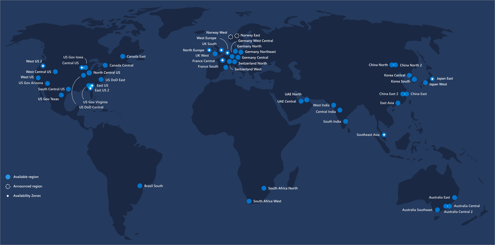
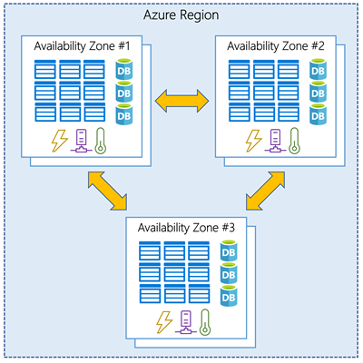
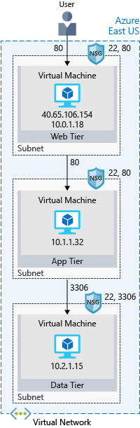
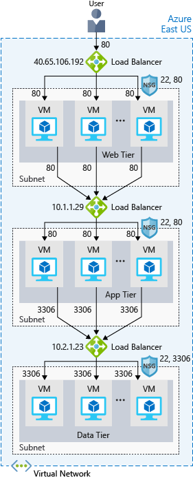
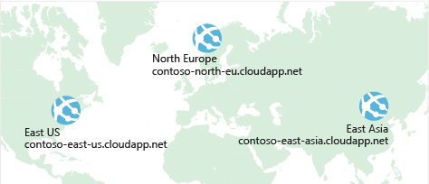
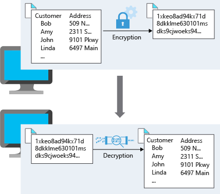

Azure : Overview for AZ-900
Version des outils
| Os / Tool | Version |
|---|---|
| Azure | X.X.X |
Azure fundamentals
Cloud Concepts - Principles of cloud computing
What is cloud computing?
- Compute power - such as Linux servers or web applications.
- Storage - such as files and databases.
- Networking - such as secure connections between the cloud provider and your company.
- Analytics - such as visualizing telemetry and performance data.

Benefits of cloud computing
It's cost-effective
- Pay-as-you-go.
- Consumption-based.
It's scalable
- Vertical scaling.
- Horizontal scaling.
It's elastic
- Compensate automatically adding or removing resources.
It's current
- Focus on what matters: building and deploying applications.
- Eliminates the burdens of maintaining software patches, hardware setup, upgrades.
It's reliable
- Data backup
- Disaster recovery.
- Data replication.
It's global
- Fully redundant datacenters located in various regions all over the globe.
It's secure
- Physical security.
- Digital security.
Compliance terms and requirements
- How compliant is the cloud provider when it comes to handling sensitive data ?
- How compliant are the services offered by the cloud provider ?
- How can I deploy my own cloud-based solutions to scenarios that have accreditation or compliance requirements ?
- What terms are part of the privacy statement for the provider ?
Economies of scale Capital expenditure (CapEx) versus operational expenditure (OpEx)
CapEx
- Server costs.
- Storage costs.
- Network costs.
- Backup and archive costs.
- Organization continuity and disaster recovery costs.
- Datacenter infrastructure costs.
- Technical personnel.
Benefits of CapEx
With capital expenditures, you plan your expenses at the start of a project or budget period. Your costs are fixed, meaning you know exactly how much is being spent. This is appealing when you need to predict the expenses before a project starts due to a limited budget.
OpEx
- Leasing software and customized features.
- Scaling charges based on usage/demand instead of fixed hardware or capacity.
- Billing at the user or organization level.
Benefits of OpEx
With the OpEx model, companies wanting to try a new product or service don't need to invest in equipment. Instead, they pay as much or as little for the infrastructure as required.
Cloud deployment models
Public cloud
Advantages
- High scalability/agility – you don't have to buy a new server in order to scale.
- Pay-as-you-go pricing – you pay only for what you use, no CapEx costs.
- You're not responsible for maintenance or updates of the hardware.
- Minimal technical knowledge to set up and use - you can leverage the skills and expertise of the cloud provider to ensure workloads are secure, safe, and highly available.
Disadvantages
- There may be specific security requirements that cannot be met by using public cloud.
- There may be government policies, industry standards, or legal requirements which public clouds cannot meet.
- You don't own the hardware or services and cannot manage them as you may want to.
- Unique business requirements, such as having to maintain a legacy application might be hard to meet.
Private cloud
Advantages
- You can ensure the configuration can support any scenario or legacy application.
- You have control (and responsibility) over security.
- Private clouds can meet strict security, compliance, or legal requirements.
Disadvantages
- You have some initial CapEx costs and must purchase the hardware for startup and maintenance.
- Owning the equipment limits the agility - to scale you must buy, install, and setup new hardware.
- Private clouds require IT skills and expertise that's hard to come by.
Hybrid cloud
Advantages
- You can keep any systems running and accessible that use out-of-date hardware or an out-of-date operating system.
- You have flexibility with what you run locally versus in the cloud.
- You can take advantage of economies of scale from public cloud providers for services and resources where it's cheaper, and then supplement with your own equipment when it's not.
- You can use your own equipment to meet security, compliance, or legacy scenarios where you need to completely control the environment.
Disadvantages
- It can be more expensive than selecting one deployment model since it involves some CapEx cost up front.
- It can be more complicated to set up and manage.
Types of cloud services
Infrastructure as a service (IaaS)
Infrastructure as a Service is the most flexible category of cloud services. It aims to give you complete control over the hardware that runs your application (IT infrastructure servers and virtual machines (VMs), storage, networks, and operating systems). Instead of buying hardware, with IaaS, you rent it. It's an instant computing infrastructure, provisioned and managed over the internet.
Platform as a service (PaaS)
PaaS provides an environment for building, testing, and deploying software applications. The goal of PaaS is to help you create an application quickly without managing the underlying infrastructure. For example, when deploying a web application using PaaS, you don't have to install an operating system, web server, or even system updates.
Software as a service (SaaS)
SaaS is software that is centrally hosted and managed for the end customer. It is usually based on an architecture where one version of the application is used for all customers, and licensed through a monthly or annual subscription. Office 365, Skype, and Dynamics CRM Online are perfect examples of SaaS software.
Management responsibilities

Core Cloud Services - Introduction to Azure
What is Azure?
Azure is Microsoft's cloud computing platform. Azure is a continually expanding set of cloud services that help your organization meet your current and future business challenges. Azure gives you the freedom to build, manage, and deploy applications on a massive global network using your favorite tools and frameworks.
Tour of Azure services
Core Cloud Services - Azure architecture and service guarantees
Understand Datacenters and Regions in Azure

A region is a geographical area on the planet containing at least one, but potentially multiple datacenters that are nearby and networked together with a low-latency network. Azure intelligently assigns and controls the resources within each region to ensure workloads are appropriately balanced.
Understand Geographies in Azure
Azure divides the world into geographies that are defined by geopolitical boundaries or country borders. An Azure geography is a discrete market typically containing two or more regions that preserve data residency and compliance boundaries
Geographies are broken up into the following areas:
- Americas.
- Europe.
- Asia Pacific.
- Middle East and Africa.
Understand Availability Zones in Azure
Availability Zones are physically separate datacenters within an Azure region.

Understand Region Pairs in Azure
Each Azure region is always paired with another region within the same geography (such as US, Europe, or Asia) at least 300 miles away. This approach allows for the replication of resources (such as virtual machine storage) across a geography that helps reduce the likelihood of interruptions due to events such as natural disasters, civil unrest, power outages, or physical network outages affecting both regions at once.
Understand Service-Level Agreements for Azure
There are three key characteristics of SLAs for Azure products and services:
- Performance Targets.
- Uptime and Connectivity Guarantees.
- Service credits.
Compose SLAs across services
When combining SLAs across different service offerings, the resultant SLA is called a Composite SLA. The resulting composite SLA can provide higher or lower uptime values, depending on your application architecture.
Sign up for Azure
Understand Azure billing
Azure subscription
When you sign up, an Azure subscription is created by default. An Azure subscription is a logical container used to provision resources in Azure.
Create additional Azure subscriptions
- Environments.
- Organizational structures.
- Billing: You might.

Azure support options
Azure free support resources
You have 24/7 access to the online documentation, community support, and new Azure capabilities demo videos on YouTube channel.
Azure support plans
- Developer.
- Standard.
- Professional Direct.
Core Cloud Services - Manage services with the Azure portal
Azure management options
- Azure portal for interacting with Azure via a Graphical User Interface (GUI).
- Azure PowerShell and Azure Command-Line Interface (CLI) for command-line and automation-based interactions with Azure.
- Azure Cloud Shell for a web-based command-line interface.
- Azure mobile app for monitoring and managing your resources from your mobile device.
Azure Portal dashboards
A dashboard is a customizable collection of UI tiles displayed in the Azure portal. You add, remove, and position tiles to create the exact view you want, and then save that view as a dashboard. Multiple dashboards are supported, and you can switch between them as needed. You can even share your dashboards with other team members.
Access public and private preview features
- Private Preview. An Azure feature marked "private preview" is available to specific Azure customers for evaluation purposes. This is typically by invite only and issued directly by the product team responsible for the feature or service.
- Public Preview. An Azure feature marked "public preview" is available to all Azure customers for evaluation purposes. These previews can be turned on through the preview features page as detailed below.
Core Cloud Services - Azure compute options
Essential Azure compute concepts
What is Azure compute?
Azure compute is an on-demand computing service for running cloud-based applications. It provides computing resources like multi-core processors and supercomputers via virtual machines and containers. It also provides serverless computing to run apps without requiring infrastructure setup or configuration. The resources are available on-demand and can typically be created in minutes or even seconds. You pay only for the resources you use and only for as long as you're using them.
- Virtual machines.
- Containers.
- Azure App Service.
- Serverless computing.
Explore Azure Virtual Machines
Azure Virtual Machines (VMs) let you create and use virtual machines in the cloud. They provide infrastructure as a service (IaaS) in the form of a virtualized server and can be used in many ways. Just like a physical computer, you can customize all of the software running on the VM. VMs are an ideal choice when you need:
- Total control over the operating system (OS).
- The ability to run custom software.
- To use custom hosting configurations.
Scaling VMs in Azure
You can run single VMs for testing, development, or minor tasks; or you can group VMs together to provide high availability, scalability, and redundancy. Azure has several features such that, no matter what your uptime requirements are, Azure can meet them. These features include:
- Availability sets : An availability set is a logical grouping of two or more VMs that help keep your application available during planned or unplanned maintenance.
- Virtual Machine Scale Sets : Azure Virtual Machine Scale Sets let you create and manage a group of identical, load balanced VMs
- Azure Batch : Azure Batch enables large-scale job scheduling and compute management with the ability to scale to tens, hundreds, or thousands of VMs.

Explore Containers in Azure
Azure supports Docker containers (a standardized container model), and there are several ways to manage containers in Azure.
- Azure Container Instances (ACI) : Azure Container Instances (ACI) offers the fastest and simplest way to run a container in Azure. You don't have to manage any virtual machines or configure any additional services. It is a PaaS offering that allows you to upload your containers and execute them directly with automatic elastic scale.
- Azure Kubernetes Service (AKS) : The task of automating, managing, and interacting with a large number of containers is known as orchestration. Azure Kubernetes Service (AKS) is a complete orchestration service for containers with distributed architectures with multiple containers.
Explore Azure App Service
Azure App Service enables you to build and host web apps, background jobs, mobile backends, and RESTful APIs in the programming language of your choice without managing infrastructure. It offers automatic scaling and high availability.
With Azure App Service, you can host most common web app styles including:
- Web Apps.
- API Apps.
- WebJobs.
- Mobile Apps.
Explore Serverless computing in Azure
Serverless computing is the abstraction of servers, infrastructure, and OSs. With serverless computing, Azure takes care of managing the server infrastructure and allocation/deallocation of resources based on demand. Infrastructure isn't your responsibility. Scaling and performance are handled automatically, and you are billed only for the exact resources you use. There's no need to even reserve capacity.
Serverless computing encompasses three ideas:
- Abstraction of servers.
- Event-driven scale.
- Micro-billing.
Azure has two implementations of serverless compute:
- Azure Functions.
- Azure Logic Apps.
Core Cloud Services - Azure data storage options
Benefits of using Azure to store data
Benefits
- Automated backup and recovery.
- Replication across the globe.
- Support for data analytics.
- Encryption capabilities.
- Multiple data types.
- Data storage in virtual disks.
- Storage tiers.
Types of data
- Structured data.
- Semi-structured data.
- Unstructured data.
How Azure data storage can meet your business storage needs
Azure SQL Database
Azure SQL Database is a relational database as a service (DaaS) based on the latest stable version of the Microsoft SQL Server database engine.
Azure Cosmos DB
Azure Cosmos DB is a globally distributed database service. It supports schema-less data that lets you build highly responsive and Always On applications to support constantly changing data.
Azure Blob storage
Azure Blob Storage is unstructured, meaning that there are no restrictions on the kinds of data it can hold.
Azure Data Lake Storage
The Data Lake feature allows you to perform analytics on your data usage and prepare reports. Data Lake is a large repository that stores both structured and unstructured data.
Azure Files
Azure Files offers fully managed file shares in the cloud that are accessible via the industry standard Server Message Block (SMB) protocol.
Azure Queue
Azure Queue storage is a service for storing large numbers of messages that can be accessed from anywhere in the world.
Disk Storage
Disk storage provides disks for virtual machines, applications, and other services to access and use as they need, similar to how they would in on-premises scenarios
Storage tiers
Azure offers three storage tiers for blob object storage:
- Hot storage tier: optimized for storing data that is accessed frequently.
- Cool storage tier: optimized for data that are infrequently accessed and stored for at least 30 days.
- Archive storage tier: for data that are rarely accessed and stored for at least 180 days with flexible latency requirements.
Encryption and replication
Azure provides security and high availability to your data through encryption and replication features.
- Azure Storage Service Encryption (SSE) for data at rest helps you secure your data to meet the organization's security and regulatory compliance. It encrypts the data before storing it and decrypts the data before retrieving it. The Encryption and decryption are transparent to the user.
- Client-side encryption is where the data is already encrypted by the client libraries. Azure stores the data in the encrypted state at rest, which is then decrypted during retrieval.
Comparison between Azure data storage and on-premises storage
- Cost effectiveness.
- Reliability.
- Storage types.
- Agility.
Core Cloud Services - Azure networking options
Deploy your site to Azure
Using an N-tier architecture
An N-tier architecture divides an application into two or more logical tiers. Architecturally, a higher tier can access services from a lower tier, but a lower tier should never access a higher tier.
- The web tier provides the web interface to your users through a browser.
- The application tier runs business logic.
- The data tier includes databases and other storage that hold product information and customer orders.

What's an Azure region?
A region is one or more Azure data centers within a specific geographic location. East US, West US, and North Europe are examples of regions. In this instance, you see that the application is running in the East US region.
What's a virtual network?
A virtual network allows Azure resources to securely communicate with each other, the internet, and on-premises networks. A virtual network is scoped to a single region; however, multiple virtual networks from different regions can be connected together using virtual network peering.
What's a network security group?
A network security group, or NSG, allows or denies inbound network traffic to your Azure resources. Think of a network security group as a cloud-level firewall for your network.
Scale with Azure Load Balancer
What are availability and high availability?
Availability refers to how long your service is up and running without interruption. High availability, or highly available, refers to a service that's up and running for a long period of time.
What is resiliency?
Resiliency refers to a system's ability to stay operational during abnormal conditions.
- Natural disasters.
- System maintenance, both planned and unplanned, including software updates and security patches.
- Spikes in traffic to your site.
- Threats made by malicious parties, such as distributed denial of service, or DDoS, attacks.
What is a load balancer?
A load balancer distributes traffic evenly among each system in a pool. A load balancer can help you achieve both high availability and resiliency.
What is Azure Load Balancer?
Azure Load Balancer is a load balancer service that Microsoft provides that helps take care of the maintenance for you. Load Balancer supports inbound and outbound scenarios, provides low latency and high throughput, and scales up to millions of flows for all Transmission Control Protocol (TCP) and User Datagram Protocol (UDP) applications.

Azure Application Gateway
Application Gateway is a load balancer designed for web applications. It uses Azure Load Balancer at the transport level (TCP) and applies sophisticated URL-based routing rules to support several advanced scenarios.
Here are some of the benefits of using Azure Application Gateway over a simple load balancer:
- Cookie affinity.
- SSL termination.
- Web application firewall.
- URL rule-based routes.
- Rewrite HTTP headers.
What is a Content Delivery Network?
A content delivery network (CDN) is a distributed network of servers that can efficiently deliver web content to users. It is a way to get content to users in their local region to minimize latency.
What about DNS?
DNS, or Domain Name System, is a way to map user-friendly names to their IP addresses. You can think of DNS as the phonebook of the internet.
Reduce latency with Azure Traffic Manager
What is network latency?
Latency refers to the time it takes for data to travel over the network. Latency is typically measured in milliseconds.
Compare latency to bandwidth. Bandwidth refers to the amount of data that can fit on the connection. Latency refers to the time it takes for that data to reach its destination.
Scale out to different regions
One way to reduce latency is to provide exact copies of your service in more than one region. The following illustration shows an example of global deployment.

Use Traffic Manager to route users to the closest endpoint
One answer is Azure Traffic Manager. Traffic Manager uses the DNS server that's closest to the user to direct user traffic to a globally distributed endpoint.
Security, responsibility, and trust in Azure
Cloud security is a shared responsibility

A layered approach to security

- Data : It's the responsibility of those storing and controlling access to data to ensure that it's properly secured.
- Application : Integrating security into the application development lifecycle will help reduce the number of vulnerabilities introduced in code.
- Compute : Malware, unpatched systems, and improperly secured systems open your environment to attacks.
- Networking : At this layer, the focus is on limiting the network connectivity across all your resources to allow only what is required. By limiting this communication, you reduce the risk of lateral movement throughout your network.
- Perimeter : At the network perimeter, it's about protecting from network-based attacks against your resources.
- Identity and access : The identity and access layer is all about ensuring identities are secure, access granted is only what is needed, and changes are logged.
- Physical security : With physical security, the intent is to provide physical safeguards against access to assets. These safeguards ensure that other layers can't be bypassed, and loss or theft is handled appropriately.
Get tips from Azure Security Center
A great place to start when examining the security of your Azure-based solutions is Azure Security Center. Security Center is a monitoring service that provides threat protection across all of your services both in Azure, and on-premises. Security Center can:
Available tiers
- Free : Available as part of your Azure subscription, this tier is limited to assessments and recommendations of Azure resources only.
- Standard : This tier provides a full suite of security-related services including continuous monitoring, threat detection, just-in-time access control for ports, and more.
Identity and access
Authentication and authorization
- Authentication is the process of establishing the identity of a person or service looking to access a resource. It involves the act of challenging a party for legitimate credentials, and provides the basis for creating a security principal for identity and access control use. It establishes if they are who they say they are.
- Authorization is the process of establishing what level of access an authenticated person or service has. It specifies what data they're allowed to access and what they can do with it.
What is Azure Active Directory?
Azure AD is a cloud-based identity service. It has built-in support for synchronizing with your existing on-premises Active Directory or can be used stand-alone.
Azure AD provides services such as:
- Authentication.
- Single-Sign-On (SSO).
- Business to business (B2B) identity services.
- Device Management.
Single sign-on
Multi-factor authentication
- Something you know : password.
- Something you possess : mobile app.
- Something you are : biometric property.
Providing identities to services
It's usually valuable for services to have identities. Often, and against best practices, credential information is embedded in configuration files. With no security around these configuration files, anyone with access to the systems or repositories can access these credentials and risk exposure.
- Service principals : An identity is just a thing that can be authenticated. A principal is an identity acting with certain roles or claims. Usually, it is not useful to consider identity and principal separately, but think of using 'sudo' on a Bash prompt in Linux or on Windows using "run as Administrator."
- Managed identities for Azure services : The creation of service principals can be a tedious process, and there are a lot of touch points that can make maintaining them difficult. Managed identities for Azure services are much easier and will do most of the work for you.
Role-based access control
Roles are sets of permissions, like "Read-only" or "Contributor", that users can be granted to access an Azure service instance.
Identities are mapped to roles directly or through group membership. Separating security principals, access permissions, and resources provides simple access management and fine-grained control. Administrators are able to ensure the minimum necessary permissions are granted.

Encryption
What is encryption?
- Symmetric encryption uses the same key to encrypt and decrypt the data.
- Asymmetric encryption uses a public key and private key pair.
Encryption at rest

Encryption in transit

Encryption on Azure
- Encrypt raw storage : Azure Storage Service Encryption.
- Encrypt virtual machine disks : Azure Disk Encryption.
- Encrypt databases : Transparent data encryption (TDE).
- Encrypt secrets : Azure Key Vault.
Overview of Azure certificates
Certificates used in Azure are x.509 v3 can be signed by a trusted certificate authority, or they can be self-signed.
Types of certificates
- Service certificates are used for cloud services.
- Management certificates are used for authenticating with the management API.
Using Azure Key Vault with certificates
You can store your certificates in Azure Key Vault - much like any other secret. However, Key Vault provides additional features above and beyond the typical certificate management.
Protect your network
- Azure Firewall is a managed, cloud-based, network security service that protects your Azure Virtual Network.
- Azure Application Gateway is a load balancer that includes a Web Application Firewall (WAF) that provides protection from common, known vulnerabilities in sites.
- Network virtual appliances (NVAs)are ideal options for non-HTTP services or advanced configurations, and are similar to hardware firewall appliances.

Protect your shared documents
Microsoft Azure Information Protection (sometimes referred to as AIP) is a cloud-based solution that helps organizations classify and optionally protect documents and emails by applying labels.
Azure Advanced Threat Protection
Azure Advanced Threat Protection (Azure ATP) is a cloud-based security solution that identifies, detects, and helps you investigate advanced threats, compromised identities, and malicious insider actions directed at your organization.
Apply and monitor infrastructure standards with Azure Policy
Define IT compliance with Azure Policy
Planning out a consistent cloud infrastructure starts with setting up policy. Your policies will enforce your rules for created resources, so your infrastructure stays compliant with your corporate standards, cost requirements, and service-level agreements (SLAs) you have with your customers.
Azure Policy is an Azure service you use to create, assign and, manage policies. These policies enforce different rules and effects over your resources so that those resources stay compliant with your corporate standards and service level agreements.
Creating a policy
- Create a policy definition.
- Assign a definition to a scope of resources.
- View policy evaluation results.
Organize policy with initiatives
Managing a few policy definitions is easy, but once you have more than a few, you will want to organize them. That's where initiatives come in.
Initiatives work alongside policies in Azure Policy. An initiative definition is a set or group of policy definitions to help track your compliance state for a larger goal. Even if you have a single policy, we recommend using initiatives if you anticipate increasing the number of policies over time.
Enterprise governance management
Access management occurs at the Azure subscription level. This allows an organization to configure each division of the company in a specific fashion based on their responsibilities and requirements. Planning and keeping rules consistent across subscriptions can be challenging without a little help.
Azure Management Groups are containers for managing access, policies, and compliance across multiple Azure subscriptions.
Define standard resources with Azure Blueprints
Adhering to security or compliance requirements, whether government or industry requirements, can be difficult and time-consuming. To help you with auditing, traceability, and compliance with your deployments, use Azure Blueprint artifacts and tools.
Explore your service compliance with Compliance Manager
Governing your own resources and how they are used is only part of the solution when using a cloud provider. You also have to understand how the provider manages the underlying resources you are building on.
Microsoft takes this management very seriously and provides full transparency with four sources:
- Microsoft Privacy Statement.
- Microsoft Trust Center.
- Service Trust Portal.
- Compliance Manager.
Monitor your service health
Defining policy and access provides fine-grained control over resources in your cloud IT infrastructure. Once those resources are deployed, you will want to know about any issues or performance problems they might encounter.
Azure provides two primary services to monitor the health of your apps and resources.
- Azure Monitor.
- Azure Service Health.
Azure Monitor
Azure Monitor maximizes the availability and performance of your applications by delivering a comprehensive solution for collecting, analyzing, and acting on telemetry from your cloud and on-premises environments.
Azure Service Health
Azure Service Health is a suite of experiences that provide personalized guidance and support when issues with Azure services affect you. It can notify you, help you understand the impact of issues, and keep you updated as the issue is resolved. Azure Service Health can also help you prepare for planned maintenance and changes that could affect the availability of your resources.
Control and organize Azure resources with Azure Resource Manager
Principles of resource groups
What are resource groups?
Resource groups are a fundamental element of the Azure platform. A resource group is a logical container for resources deployed on Azure. These resources are anything you create in an Azure subscription like virtual machines, Application Gateways, and CosmosDB instances. All resources must be in a resource group and a resource can only be a member of a single resource group. Many resources can be moved between resource groups with some services having specific limitations or requirements to move. Resource groups can't be nested. Before any resource can be provisioned, you need a resource group for it to be placed in.
Lifecycle
If you delete a resource group, all resources contained within are also deleted. Organizing resources by lifecycle can be useful in non-production environments, where you might try an experiment, but then dispose of it when done. Resource groups make it easy to remove a set of resources at once.
Authorization
Resource groups are also a scope for applying role-based access control (RBAC) permissions. By applying RBAC permissions to a resource group, you can ease administration and limit access to allow only what is needed.
Organizing principles
Core infrastructure :
Environments :
Departments :
Combinaison :
Use tagging to organize resources
What are tags?
Tags are name/value pairs of text data that you can apply to resources and resource groups. Tags allow you to associate custom details about your resource, in addition to the standard Azure properties a resource has:
- Department (like finance, marketing, and more).
- Environment (prod, test, dev).
- Cost center.
- Lifecycle and automation (like shutdown and startup of virtual machines).
Use resource locks to protect resources
What are resource locks?
Resource locks are a setting that can be applied to any resource to block modification or deletion. Resource locks can set to either Delete or Read-only. Delete will allow all operations against the resource but block the ability to delete it. Read-only will only allow read activities to be performed against it, blocking any modification or deletion of the resource. Resource locks can be applied to subscriptions, resource groups, and to individual resources, and are inherited when applied at higher levels.
Predict costs and optimize spending for Azure
Purchase Azure products and services
Usage meters When you provision an Azure resource, Azure creates one or more meter instances for that resource. The meters track the resources' usage, and generate a usage record that is used to calculate your bill.
For example, a single virtual machine that you provision in Azure might have the following meters tracking its usage:
- Compute Hours.
- IP Address Hours.
- Data Transfer In.
- Data Transfer Out.
- Standard Managed Disk.
- Standard Managed Disk Operations.
- Standard IO-Disk.
- Standard IO-Block Blob Read.
- Standard IO-Block Blob Write.
- Standard IO-Block Blob Delete.
The meters and pricing vary per product and often have different pricing tiers based on the size or capacity of the resource. Check the documentation for specific details on what each service area costs.
Factors affecting costs
Just like your on-premises equipment costs, there are several elements that will affect your monthly costs when using Azure services. Let's look at a few of the primary factors including resource type, services, the user's location, and the billing zone.
Resource type
Costs are resource-specific, so the usage that a meter tracks and the number of meters associated with a resource depend on the resource type.
Services
Azure usage rates and billing periods can differ between Enterprise, Web Direct, and Cloud Solution Provider (CSP) customers. Some subscription types also include usage allowances, which affect costs.
Location
Azure has datacenters all over the world. Usage costs vary between locations that offer particular Azure products, services, and resources based on popularity, demand, and local infrastructure costs
Azure billing zones
Bandwidth refers to data moving in and out of Azure datacenters. Most of the time inbound data transfers (data going into Azure datacenters) are free. For outbound data transfers (data going out of Azure datacenters), the data transfer pricing is based on Billing Zones.
Estimate costs with the Azure pricing calculator
Introducing the Azure pricing calculator
To make estimates easy for customers to create, Microsoft developed the Azure pricing calculator. The Azure pricing calculator is a free web-based tool that allows you to input Azure services and modify properties and options of the services. It outputs the costs per service and total cost for the full estimate.
The options that you can configure in the pricing calculator vary between products, but basic configuration options include:
- Region.
- Tier.
- Billing Options.
- Support Options.
- Programs and Offers.
- Azure Dev/Test Pricing.
Predict and optimize with Cost Management and Azure Advisor
What is Azure Advisor?
Azure Advisor is a free service built-into Azure that provides recommendations on high availability, security, performance, and cost. Advisor analyzes your deployed services and looks for ways to improve your environment across those four areas. We'll focus on the cost recommendations, but you'll want to take some time to review the other recommendations as well.
Advisor makes cost recommendations in the following areas:
- Reduce costs by eliminating unprovisioned Azure ExpressRoute circuits.
- Buy reserved instances to save money over pay-as-you-go.
- Right-size or shutdown underutilized virtual machines.
Estimate the Total Cost of Ownership with the Azure TCO calculator
The pricing calculator and cost management advisor can help you predict and analyze your spend for new or existing services.
If you are starting to migrate to the cloud, a useful tool you can use to predict your cost savings is the Total Cost of Ownership (TCO) calculator. To use the TCO calculator, you need to complete four steps.
Save on infrastructure costs
- Use Azure credits.
- Use spending limits.
- Use reserved instances.
- Choose low-cost locations and regions.
- Research available cost-saving offers.
- Right-size underutilized virtual machines.
- Deallocate virtual machines in off hours.
- Delete unused virtual machines.
- Migrate to PaaS or SaaS services.
Azure ressources
Organiser vos ressources Azure

- Groupes d’administration : Ces groupes sont des conteneurs qui vous permettent de gérer plus facilement l’accès, la stratégie et la conformité pour plusieurs abonnements. Tous les abonnements dans un groupe d’administration héritent automatiquement des conditions appliquées à ce groupe d’administration.
- Abonnements : Un abonnement regroupe les comptes d’utilisateur et les ressources qui ont été créées par ces derniers. Chaque abonnement a des limites ou quotas sur la quantité de ressources que vous pouvez créer et utiliser. Les organisations peuvent utiliser des abonnements pour gérer les coûts et les ressources qui sont créées par les utilisateurs, les équipes ou les projets.
- Groupes de ressources : Un groupe de ressources est un conteneur logique dans lequel les ressources Azure comme les applications web, les bases de données et les comptes de stockage sont déployées et gérées.
- Ressources : les ressources sont des instances de services que vous créez, telles que des machines virtuelles, un stockage ou des bases de données SQL.
Gérer vos coûts avec Azure Cost Management
Azure Cost Management fournit quelques fonctionnalités utiles pour prévoir et gérer les coûts :
- Analyser les coûts du cloud vous aide à examiner et à analyser tous vos coûts. Vous pouvez afficher le coût agrégé pour votre compte ou tous les coûts cumulés au fil du temps.
- Superviser avec les budgets vous permet de créer un budget et de configurer des alertes qui vous avertissent quand vous êtes sur le point de le dépasser.
- Optimiser avec des recommandations vous aide à identifier les ressources inutilisées et sous-exploitées afin de réduire le gaspillage.
- Gérer les factures et les paiements vous donne une visibilité de vos investissements dans le cloud.
Gouvernance, sécurité et conformité dans Azure
Azure Blueprints
Azure Blueprints permet aux architectes cloud et aux groupes centraux responsables des technologies de l’information de définir un ensemble reproductible de ressources Azure qui implémentent et respectent les normes, modèles et exigences d’une organisation. Azure Blueprints permet aux équipes de développement de créer et mettre en place rapidement de nouveaux environnements et d’avoir confiance en leur conformité aux exigences de l’organisation à l’aide d’un ensemble de composants intégrés, comme la mise en réseau, visant à accélérer le développement et la livraison.
Azure Policy
Azure Policy est un service utilisé pour créer, attribuer et gérer des stratégies. Ces stratégies appliquent des règles à vos ressources afin qu’elles restent conformes aux standards et aux contrats de niveau de service de l’entreprise. Azure Policy analyse vos ressources pour identifier celles qui ne sont pas conformes aux stratégies que vous implémentez. Par exemple, vous pouvez disposer d’une stratégie qui n’autorise que les machines virtuelles d’une certaine taille à s’exécuter dans votre environnement. Une fois implémentée, cette stratégie évalue les machines virtuelles existantes dans votre environnement ainsi que toutes les nouvelles machines virtuelles qui y sont déployées. L’évaluation de la stratégie génère des événements de conformité que vous pouvez utiliser à des fins de supervision et de création de rapports.
Centre de sécurité Azure
Azure Security Center joue un rôle important dans votre stratégie de gouvernance. Il vous aide à assurer un haut niveau de sécurité, car il :
- Fournit une vue unifiée de la sécurité sur l’ensemble de vos charges de travail.
- Collecte, explore et analyse les données de sécurité à partir d’un large éventail de sources, dont les pare-feu et d’autres solutions partenaires.
- Fournit des recommandations de sécurité actionnables pour corriger les problèmes avant qu’ils ne soient exploités de façon malveillante.
- Peut être utilisé pour appliquer des stratégies de sécurité sur l’ensemble de vos charges de travail cloud hybrides pour garantir la conformité aux normes de sécurité.
La plupart des fonctionnalités de sécurité, telles que la stratégie de sécurité et les recommandations, sont disponibles gratuitement. Certaines des fonctionnalités plus avancées, telles que l’accès aux machines virtuelles juste-à-temps et la prise en charge des charges de travail hybrides, sont disponibles au niveau standard de Security Center. L’accès aux machines virtuelles juste-à-temps peut aider à réduire la surface d’attaque du réseau en contrôlant l’accès aux ports de gestion sur les machines virtuelles Azure
Supervision et création de rapports dans Azure
Azure Monitor Azure Monitor fournit un seul hub unifié pour toutes les données de supervision et de diagnostic dans Azure. Vous pouvez l’utiliser pour obtenir une visibilité sur l’ensemble de vos ressources. Grâce à Azure Monitor, vous pouvez rechercher et résoudre les problèmes et optimiser le niveau de performance. Vous pouvez également comprendre le comportement des clients.
Azure Service Health Azure Service Health fournit un affichage personnalisé de l’intégrité des services et régions Azure que vous utilisez. Service Health publie des informations sur les problèmes actuels qui sont utiles pour comprendre l’impact sur vos ressources. Des mises à jour régulières vous tiennent informé de la résolution des problèmes.
Azure Advisor Azure Advisor est un conseiller personnalisé gratuit basé dans le cloud qui vous aide à suivre et à implémenter de bonnes pratiques pour les déploiements Azure. Il analyse la configuration de vos ressources et les données de télémétrie d’utilisation et suggère des solutions qui peuvent vous aider à optimiser votre environnement. Les recommandations sont divisées en quatre catégories :
- Haute disponibilité : vous aide à améliorer la continuité de vos applications stratégiques. Les recommandations peuvent inclure l’ajout de machines virtuelles à un groupe à haute disponibilité ou l’ajout de points de terminaison géoredondants.
- Sécurité : permet de détecter les menaces et vulnérabilités pouvant conduire à des failles de sécurité. Les recommandations peuvent inclure l’application du chiffrement des disques ou l’activation de groupes de sécurité réseau.
- Performances : pour améliorer la vitesse de vos applications. Les recommandations peuvent inclure l’amélioration des niveaux de performance des requêtes SQL en créant des index ou en reconfigurant vos paramètres de gestion du trafic.
- Coût : pour optimiser et réduire vos dépenses Azure globales. Les recommandations peuvent concerner le redimensionnement ou l’arrêt des machines virtuelles sous-exploitées ou encore le transfert vers des réservations Azure pour diminuer le coût total de possession.
Centre de sécurité Azure Azure Security Center joue également un rôle important dans votre stratégie de supervision. Il peut vous aider à superviser la sécurité de vos machines, réseaux, systèmes de stockage, services de données et applications. Security Center fournit la détection avancée des menaces en utilisant l’apprentissage automatique et l’analytique comportementale pour aider à identifier les menaces actives ciblant vos ressources Azure. Il met également à disposition une protection contre les menaces qui bloque les programmes malveillants ou autres codes indésirables et réduit la surface d’exposition aux attaques par force brute et autres attaques réseau.
Availability in Azure
Availability sets
An availability set is a logical grouping of VMs within a datacenter that allows Azure to understand how your application is built to provide for redundancy and availability.
Fault domains A fault domain is a logical group of underlying hardware that share a common power source and network switch, similar to a rack within an on-premises datacenter. As you create VMs within an availability set, the Azure platform automatically distributes your VMs across these fault domains. This approach limits the impact of potential physical hardware failures, network outages, or power interruptions.
Update domains An update domain is a logical group of underlying hardware that can undergo maintenance or be rebooted at the same time. As you create VMs within an availability set, the Azure platform automatically distributes your VMs across these update domains. This approach ensures that at least one instance of your application always remains running as the Azure platform undergoes periodic maintenance. The order of update domains being rebooted may not proceed sequentially during planned maintenance, but only one update domain is rebooted at a time.